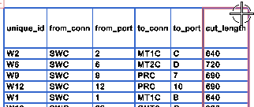
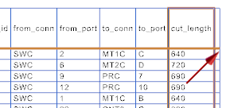

Move your cursor over the right–most column so that it highlights.

|
Tip |
If you experience any difficulty selecting the column, you can highlight just the column header cell, then right–click and choose Select→Columns. |
Right–click the highlighted column and choose Insert→Columns to the Right.

A column is added to the cut sheet.
Press Esc to deselect the highlighted column.